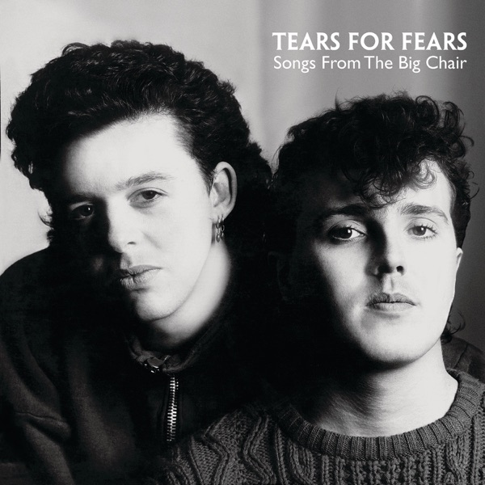

Songs From The Big Chair
Tears For Fears
Upgrade idea: The 1985 Sterling Sound / Greg Calbi original is the reference for this pressing. The definitive audiophile upgrade is the **Mobile Fidelity MFSL 1-265** (Original Master Recording, 1989 US) — half-speed mastered from the original analog tapes, quieter surfaces, and widely regarded as the best-sounding version. As an alternative, the standard 2014 Mercury/UMe remaster (180g) is widely available and a significant step up from later club pressings in terms of surface quality.
- Original release
- 1985
- Pressing year
- 1985
- Country
- US
- Format
- Vinyl LP, Album, Club Edition, Stereo (Indianapolis Pressing)
- Label / Cat#
- Mercury – 422-824 300-1 M-1
- Genres
- Electronic, Rock
- Styles
- Synth-pop, New Wave
- Discogs release
- 31687430
- Discogs master
- 43063
- Apple Music
- Songs from the Big Chair
- Wikipedia
- Songs From The Big Chair
Production notes
Tracklist (Discogs)
| A1 | Shout | 6:35 |
| A2 | The Working Hour | 6:29 |
| A3 | Everybody Wants To Rule The World | 4:10 |
| A4 | Mothers Talk | 3:53 |
| B1 | I Believe | 4:53 |
| B2 | Broken | 2:33 |
| B3 | Head Over Heels | 5:00 |
| B4 | Listen | 6:54 |
Tracklist (Apple Music)
| 1 | Shout | 6:32 |
| 2 | The Working Hour | 6:31 |
| 3 | Everybody Wants to Rule the World | 4:11 |
| 4 | Mothers Talk | 5:06 |
| 5 | I Believe | 4:55 |
| 6 | Broken | 2:38 |
| 7 | Head Over Heels / Broken | 5:02 |
| 8 | Listen | 6:53 |
Personnel & credits
- Curt Smith — Bass Guitar
- Tim O'Sullivan — Cover
- Manny Elias — Drums
- David Bascombe — Engineer
- Roland Orzabal — Guitar
- Ian Stanley — Keyboards
- Roland Orzabal — Keyboards
- Paul King (8) — Management
- Greg Calbi — Mastered By
- Chris Hughes — Producer
- Curt Smith — Vocals
- Roland Orzabal — Vocals
Identifiers
- Barcode: 0 422-824300-1 (Text)
- Barcode: 042282430014 (Scanned, UPC_A)
- Rights Society: BMI
- Matrix / Runout: R-143666A 1 I A1F (Side A runout)
- Matrix / Runout: R-143666B 1 I A1E (Side B runout)
- Matrix / Runout: R-143666B 1 I A1M (Side A runout, variant)
- Matrix / Runout: R-143666B 1 I A2K (Side B runout, variant)
Notes
Club edition.
Notes & discrepancies
- Total runtime differs by 81s (Discogs=2427s, Apple Music=2508s) — likely a different master/remaster.
Songs From The Big Chair is Tears For Fears’ second studio album, released in February 1985 on Mercury Records, and the record that broke the duo — Roland Orzabal and Curt Smith — into full global stardom. Named after the therapist’s chair in the 1976 film Sybil, the album arrived as a polished, orchestrated expansion of the new-wave synth-pop sound that defined their debut, with producer Chris Hughes (of Adam and the Ants) and engineer Dave Bascombe delivering a lush, carefully layered sonic palette that still sounds enormous today. “Shout” and “Everybody Wants to Rule the World” became two of the defining singles of 1985, both reaching #1 in the US; “Head Over Heels” and “Mothers Talk” rounded out a near-perfect side-two sequence. The album spent five weeks at #1 on the UK Albums Chart and reached #1 in the US as well, certified 4× platinum.
Musically, the album is a masterclass in production craft — the rhythm programming, string arrangements, and layered keyboards create a dense but never claustrophobic sound. Ian Stanley’s keyboard work and Orzabal’s increasingly confident guitar playing give the record texture beyond pure synthpop, and tracks like “The Working Hour” (with Mel Collins on saxophone) and the closing “Listen” (with operatic vocals by Marilyn David) show genuine compositional ambition. It remains one of the great pop albums of the decade.
This 1985 US RCA Music Service club pressing was distributed under license from PolyGram Records, Inc. by RCA Music Service, Indianapolis, Indiana — a record club edition pressed for mail-order subscribers rather than retail release. The matrix
R-143666A 1 I A1F/R-143666B 1 I A1Econfirms the Indianapolis pressing plant. Mastered by Greg Calbi at Sterling Sound, New York — Calbi was one of the most respected mastering engineers of the era and a Sterling Sound fixture; his work on this album gives the original pressing its characteristic punch and clarity.About this 1985 US pressing (Vinyl, LP, Club Edition): Mercury catalog 422-824 300-1 M-1, RCA Music Service catalog R-143666, 1985 club edition. Indianapolis pressing. Mastered by Greg Calbi at Sterling Sound. Barcode 042282430014. Matrix R-143666A / R-143666B.